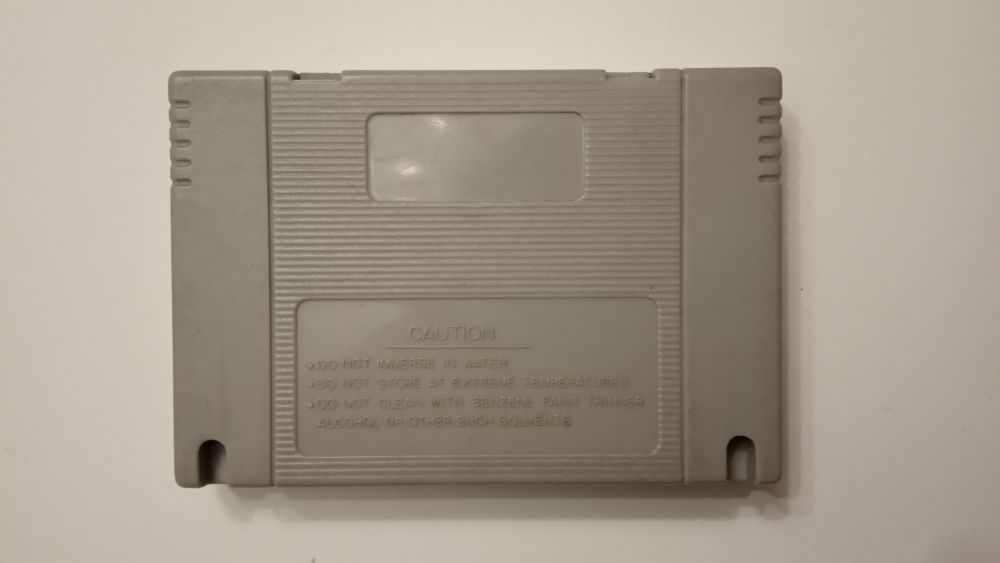
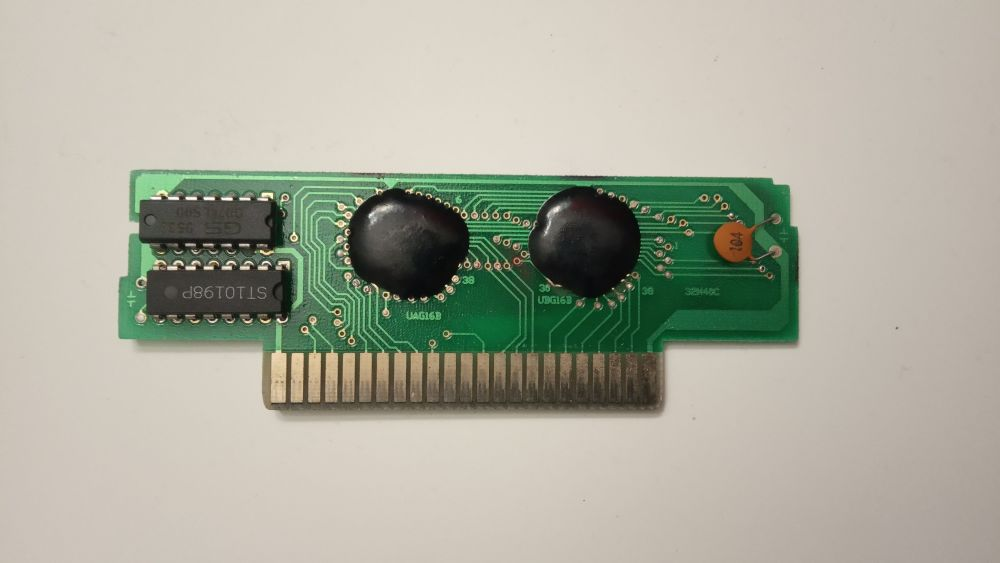
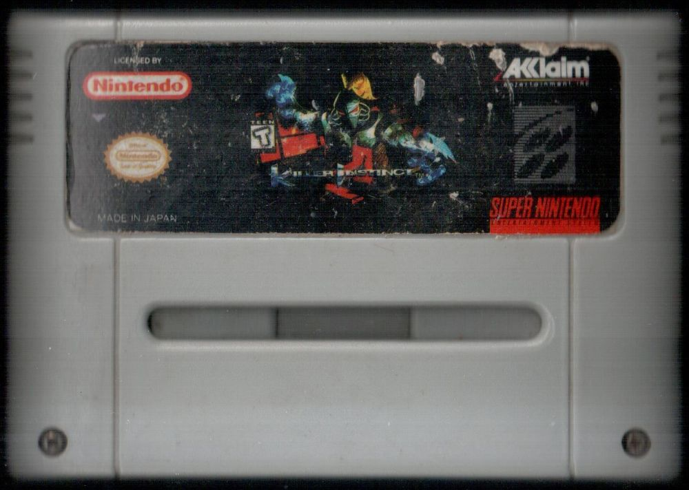
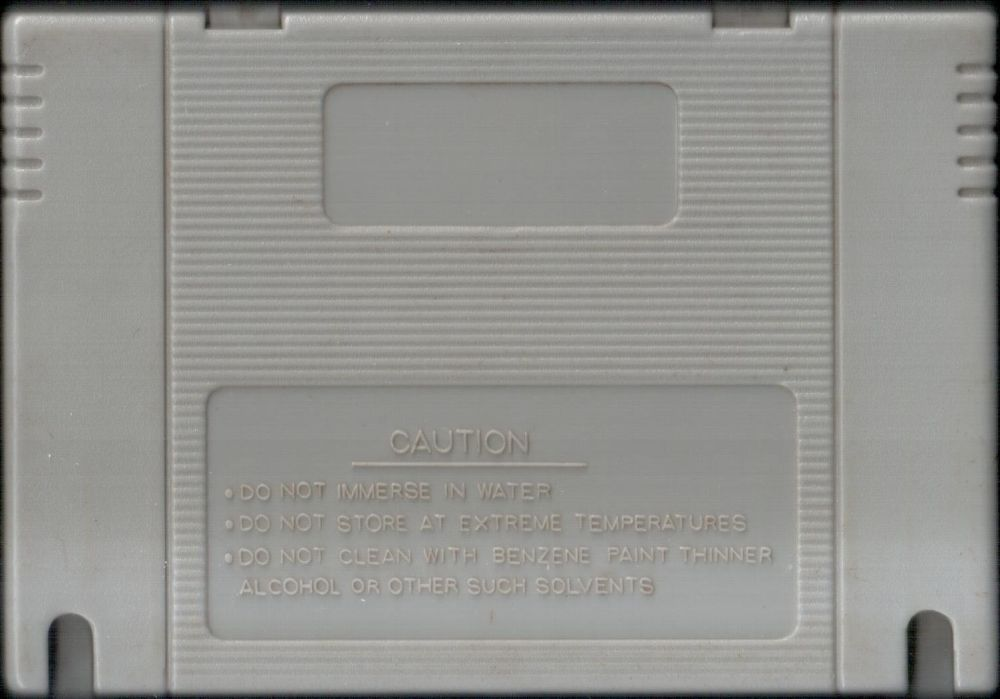

Killer Instinct
Ещё один пиратский вариант всё той же игры и ошибки при его издании как "лицензионного" те же самые:1) Самая главная ошибка - цвет корпуса картриджа, игра никогда не выходила в сером цвете, а была только чёрного цвета.
2) Acclaim логотип - какое отношение имеет к этой игре не очень понятно.
3) Полиграфия худшего качества.
4) Картинка уменьшена в сравнении с оригинальным изданием.
5) Качество пластика картриджа хуже чем оригинальные издания.
6) Крестовые винты в корпусе вместо обычных шестигранных.
7) Другие предупреждающие надписи и отсутствие клейма Нинтендо.
8) Вырезы вместо отверстий.
9) Плата использует бескорпусную технологию - для удешевления производства.
Одна из самых доступных и известных игр для Супер Нинтендо в нашей стране, полагаю именно из-за этого и имелось столько вариантов пиратских копий этой игры помимо лицензионной. Перед нами ещё одна, достаточно ходовая и полагаю из всех вариаций самая распространённая.
Время выхода этого картриджа не раньше чем август 1995 года. В самое подходящее время успели привести эту игру пираты, так как Супер Нинтендо была ещё актуальна на тот момент
Игра на картридже - всё тот же прекрасный файтинг от Нинтендо и Рэйр, являющийся портом с аркадных автоматов. В эту игру надо обязательно играть любому, кто знакомится с этой консолью, ибо она заслуживает того.
На картридже игра: Killer Instinct.
Дополнительные фото и описание к ним:



